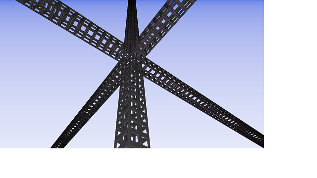
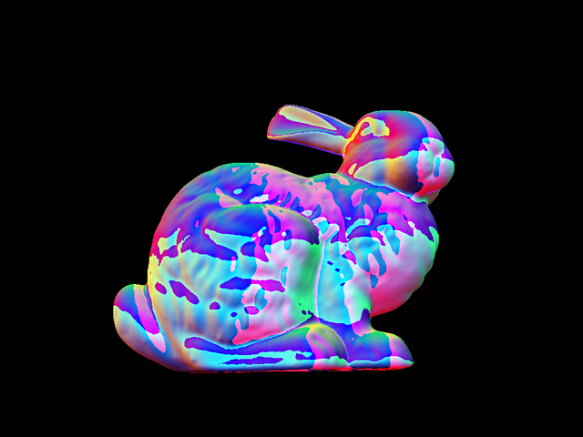
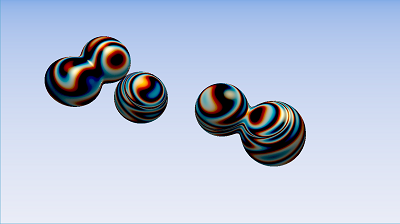
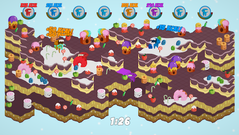
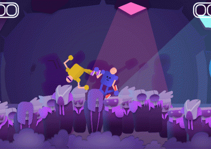

Hi there! I code graphics, games and other interactive software.
Some projects are also available on my GitHub
Graphics programming
Trippin' Through
My second 4k intro, made for Assembly 2018, and placed as 12th. Final executable size was 3876 bytes. You can watch the entry at here

Raytracer
Currently under development on: GitHub
Uses a Bounding Volume Hierarchy as an acceleration data structure. Loads OBJ files.

Rendering engine
I'm currently developing my own rendering engine with OpenGL and C++. It's using deferred shading and some of the most common post processing effects like Bloom, HDR and SSAO. The engine is under development on GitHub

Plasma Lamp's Dance of Freedom
My very first 4k intro, done for Assembly 17, and placed as 12th. Final file size was 3910 bytes. I ran out of time in the end and managed to make a quick track on the last night before submitting the entry. You can watch the entry at here

Games
Most of the game projects have been created at game jams usually in teams of 2-5 people.Sweet End

Crowd Surf Brawl

Tap Good

Shift and Catch 'em

Make Coffee the Hard Way

Cupcake boating

Morning Coffee